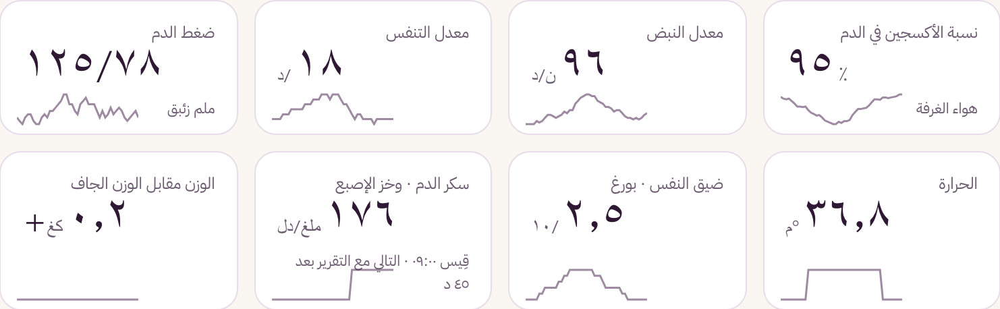
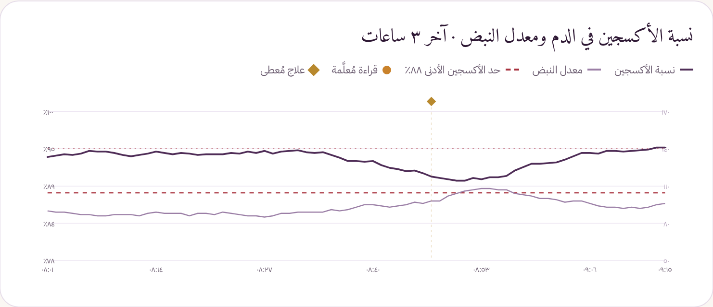
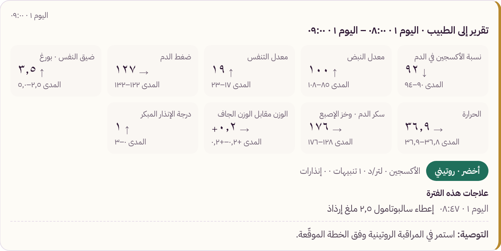
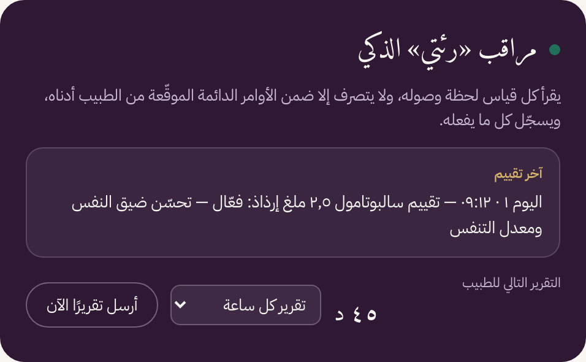
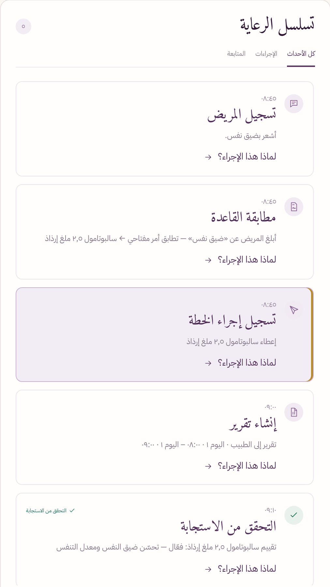
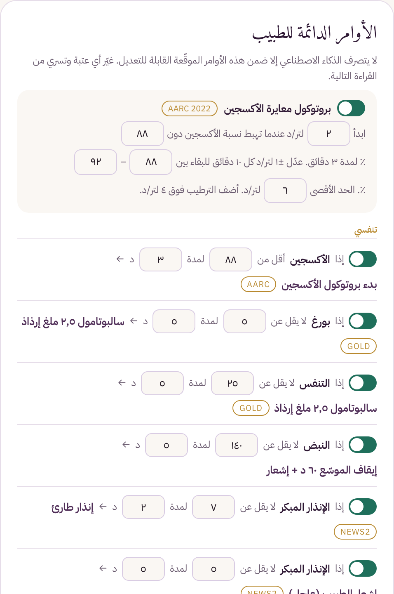
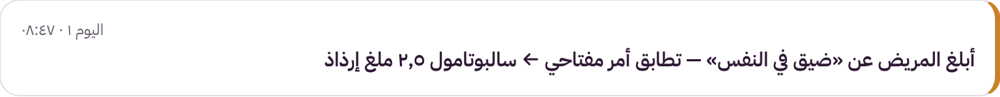
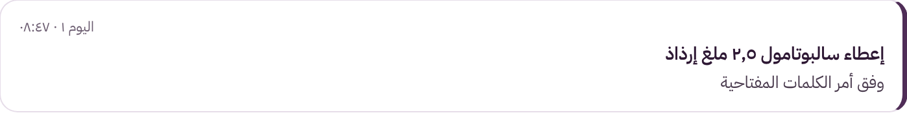
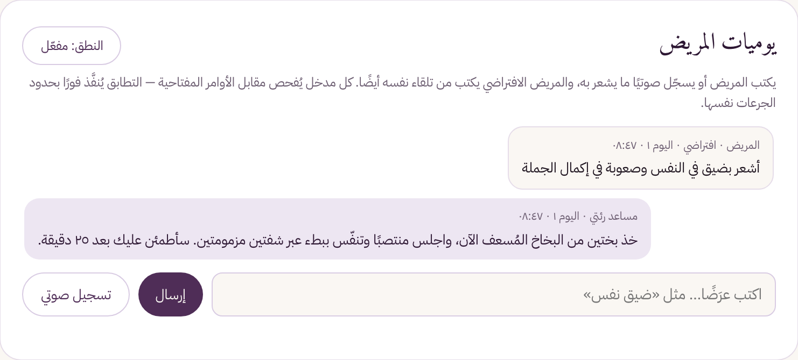

Riati | رئتي
صحة الجهاز التنفسي · متابعة منزلية
تربط المريض بطبيبه
كل يوم.
كل يوم.
المريض
في المنزل
قراءات يومية · أعراض · ملاحظات
الطبيب
في العيادة
سجل واحد · تقارير · أوامر موقّعة
من المنزل إلى الطبيب
القراءات تصل إلى سجل واحد



عند الطبيبتقرير في موعده: القراءات، مداها، واتجاهها
الذكاء الاصطناعي
يراقب لحظة بلحظة، ويرفع التقرير في موعده


أوامر الطبيب الدائمة
حالة حددها الطبيب مسبقًا ← تنفيذ فوري



وتعليمات فورية إلى المريضخذ بختين من البخاخ المُسعف الآن، واجلس منتصبًا وتنفّس ببطء.
مساحة المريض
يكتب أو يقول كيف يشعر، وبأي درجة

«أشعر بضيق نفس»
درجة ضيق النفس: ٥ من ١٠
«تحسنت، والتنفس أسهل»
كل كلمة تُقرأ فورًا… ويُسمع صوته قبل أن تتحول الإشارة إلى أزمة.
Riati | رئتي
رعاية مستمرة،
لمرض لا يتوقف.
لمرض لا يتوقف.
raitie.com